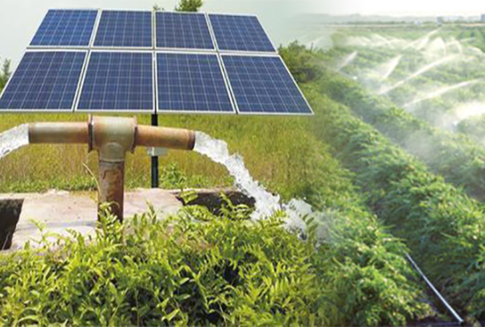
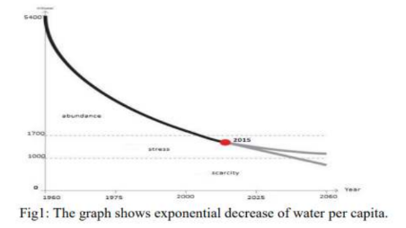
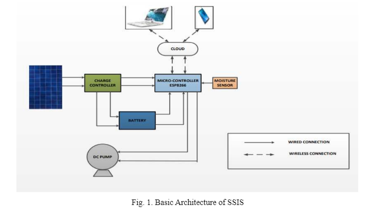
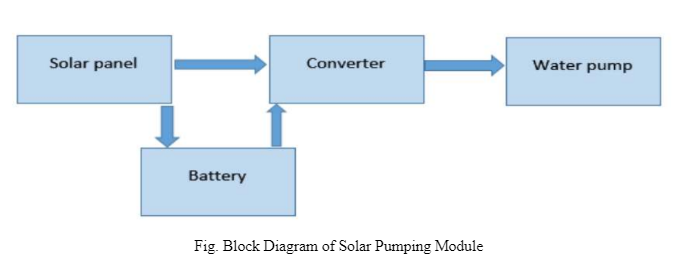
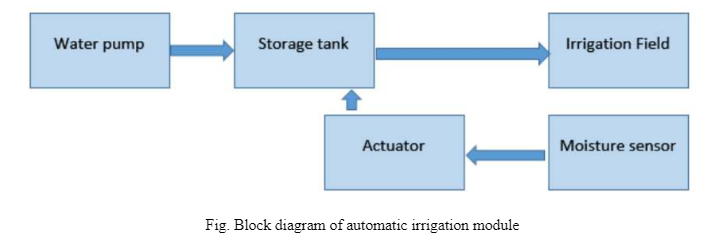
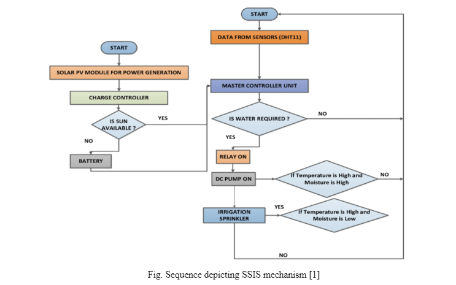
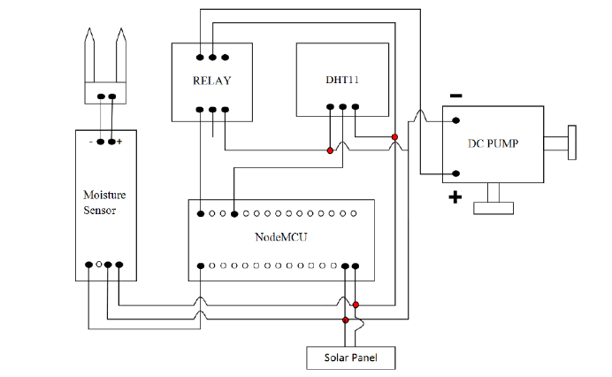

"In the present scenario, availability of power and water are insufficient to satisfy the farmer’s requirements. Traditionally, implemented techniques of irrigation are proving to be less futile as these are not good atmultitasking different concerns which is a combination of availability of water, sources of energy and timely soil profileanalysis. The key objective of the paper is to monitor the soil’s moisture content during its dry and wet conditions withthe aid of a moisture sensor circuit. Solar powered smart irrigation systems are the answer to the Indian farmer. Thissystem consists of solar powered water pump along with an automatic water flow control using a moisture sensor. It is theproposed solution for the present energy crisis for the Indian farmers. This system conserves electricity by reducing theusage of grid power and conserves water by reducing water losses. The WiFi module is operated using a Node-MCUMicrocontroller via utilizing the energy from the solar panel, run the motors which irrigates the field by sensing themoisture in the soil. The water above the marked level is pumped out by a motor by the information from the level sensor.The advancements of technology like IoT have vast demand in various operations. This system can easily access by thefarmer to control the irrigation from anywhere in the world in an effective way."
Keywords: soil moisture, irrigation, IoT, solar power, microcontroller, solar panel
Introduction

Agriculture is the backbone of all the global economy and with its allied sectors, is the incontestably the largest livelihood provider in India. India supports 15% of the world’s water resources. Irrigation plays an importantrole in agriculture. According to the World Bank data, only 35% of India’s agricultural land is irrigated, leavingthe rest 65% of farming dependent totally on rain. The main objective is to apply the system forimprovement of health of the soil and hence the plant via multiple sensors. Appropriate soil water level is anecessary pre-requisite for optimum plant growth. Also, water being an essential element for life sustenance,there is the necessity to avoid its undue usage. The cost of solar panels has been constantly decreasingwhich encourages its usage in various sectors. One of the applications of this technology is used in irrigationsystems for farming. Solar powered irrigation system can be a suitable alternative for farmers in the presentstate of energy crisis in India. This a green way for energy production which provides free energy once aninitial investment is made.
Why Need This System?
Until quite recently, India enjoyed abundant water resources. But population growth and overexploitation hasled to a situation where the demand for water is exceeding supply.

From the graph we currently notice that the water availability is in stress. If this rate continues, then we wouldface severe water scarcity. So, there is an urgent need to conserve water. During manual irrigation, the water
requirement of plants/crops is not monitored. Even when the soil is moist enough, water is still provided. Thiswater is not absorbed by the plants and thus is wasted. Hence a system is to monitor the water requirements ofthe plant is needed. Also, Smart Irrigation System installation means decreased operating expense bymaintenance personnel.
Proposed System
The proposed prototype for the automated solar powered smart irrigation system (SSIS), comprises of ESP8266as its master controller, DC water pump, DHT11 humidity and temperature sensors for monitoring andcontrolling the irrigation facility where it is mounted. In this model, the layered architecture of the IoT systemis considered which compromises of the Physical/Perception Layer, Interface Layer, Network Layer andApplication Layer as shown in the fig. 1.

The physical or perception layer consists of the sensors connected to the system for collection of data. The datacollected is transferred to the master controller which directs information for control and monitoring operationand acts as an intermediating layer between physical and application layer. The processing unit leads theaccumulated data into network layer hence facilitating the two-way communication and connectivity pathwayvia cloud infrastructure. Finally, the data reaches application layer which is responsible for monitoring andcontrol functionalities.
Objectives
To improve and stabilize the crop yields of smallholder olive farmers through the implementation of sustainableirrigation systems. To promote water management practices that optimizes the volume and timing of waterdistribution. To generate positive economic consequences for farmers and their families. Minimize year to yearyield fluctuations, leading to higher and more stable farm income.
DESCRIPTION
Proposed irrigation system mainly consists of two modules- Solar pumping module and automatic irrigationmodule. In solar pumping module a solar panel of required specification is mounted near the pump set. Thenusing a control circuit it is used to charge a battery. From the battery using a converter circuit it gives power tothe water pump which is submerged inside the well. Then the water is pumped into an overhead tank for storingwater temporarily before releasing the water into the field.

In automatic irrigation module the water outlet valve of the tank is electronically controlled by a soil moisturesensing circuit. The sensor is placed in the field where the crop is being cultivated. The sensor converts themoisture content in the soil into equivalent voltage. This is given to a sensing circuit which has a referencevoltage that can be adjusted by the farmer for setting different moisture levels for different crops. The amountof water needed for soil is proportional to the difference of these two voltages. A control signal was given to astepper motor whose rotational angle is proportional to the difference in voltage. The stepper motor in turnscontrols the crosssectional area of the valve to be opened controlling flow of water. Therefore, the amount ofwater flowing is proportional to the moisture difference.

COMPONENTS DESCRIPTION
ESP8266:
ESP8266 is a cost effective and optimal power consumption Wi-Fi microchip with fullTCP/IP stack and 32-bit microcontroller capability which allows microcontroller to connect to a Wi-Finetwork and make simple TCP/IP connections using Hayes-style commands. It operated on a powersupply of +- 3.3 V and is programmed using Lua Script. With chip clock rate acceleration and an ADC(Analog to Digital Converter) to improve the sensitivity, integrating with soil humidity sensor is acommon application.
Soil moisture sensor:
Soil moisture sensor’s Analog pin is given to port A- pin 3 of the RIO. Its Vccpin is given to the common terminal on the bread board which is given to port A- pin 1(+5V) of the RIOand its GND terminal is given to port A- pin 11/pin 12.
Temperature sensor:
Temperature sensor’s Vcc pin is given to the 5V pin (in Port C) of the RIO and its GND terminal is given to the common ground on the bread board which is connected to the AGND (Analog ground) pin of the RIO. An analog input is fed to AI0 (0+) pin and AI0 (0- ) is given to AGND probably through a common ground on the bread board.
DC Pump:
The source of energy for DC pumps is from motor, battery, or solar power to move fluid in avariety of ways. In this prototype, 12 V of DC power which is extracted from PV panels with solar cells,producing DC power when exposed to sunlight. It can be operated directly from a battery, hencerendering it more convenient, portable, energy efficient and easy to control.
IMPLEMENTATION
The logic presented by the algorithm facilitates in identifying if there is a necessity of watering the crops /plants. The cascading stages of the logic and decision-making conditions enables the maintenance of the soilmoisture levels and also has the feature of continuous status monitoring of the DC pump by analysing thelogged data in the cloud infrastructure. The process starts with moisture sensors sensing the soil. The output ofthe sensors is relayed to the input pins of master controller unit, comprising of ESP8266.
The decision and monitoring moisture content of the soil is processed with the help of master controller. The module checks for the below conditions:
A.If the soil is dry, the main controller actuates the relay and water pump starts which leads to water flow. B. If the soil is wet, then the controller turns the relay off as a result water pump is off and the water flow stops.
The energy source for the entire setup is via solar powered PV module, coupled with a charge controller. Theprototype has two modes of operation, first being via direct supply from the PV module to the master controllerand second being via battery storage unit, during low or no irradiance.
FLOW CHART

CIRCUIT DIAGRAM

ADVANTAGES
This technology is recommended for efficient automated irrigation systems and it may provide a valuable toolfor conserving water planning and irrigation scheduling which is extendable to other similar agricultural crops.Maximum absorption of the water by the plant is ensured by spreading the water uniformly using a servo motor.So, there is minimal wastage of water. This system also allows controlling the amount of water delivered to theplants when it is needed based on types of plants by monitoring soil moisture and temperature. This project canbe used in large agricultural area where human effort needs to be minimized. Many aspects of the system can becustomized and fine-tuned through software for a plant requirement.
FUTURE SCOPE
We can interface LCD screen in order to display the current status of the soil moisture content levels,percentage of water utilized to water the plant, duration of time for which the water pump is ON, etc. We canalso show the graphical representation of the moisture content levels in the soil. To improve the efficiency andeffectiveness of the system, the following recommendations can be put into consideration. Option of controllingthe water pump can be given to the farmer. The farmer may choose to stop the growth of crops or the crops mayget damaged due to adverse weather conditions. In such cases farmer may need to stop the system remotely.The idea of using IOT for irrigation can be extended further to other activities in farming such as cattlemanagement, fire detection and climate control. This would minimize human intervention in farming activities.
CONCLUSION
In the normal irrigation pattern, the water wastage is high since it is done manually. This proposed systemconsists the advantage of both manually operated as well as automatic irrigation pattern, which paves the pathfor the increased yield [5]. Moreover, in dry areas where there is inadequate rainfall, irrigation becomesdifficult. Hence, we require an automatic system that will precisely monitor and control the water requirementsin the field. Installing Smart irrigation system saves time and ensures judicious usage of water. Moreover, thisarchitecture uses microcontroller which promises an increase in system life by reducing power consumption [4]Embedded system for computerized irrigation of an agriculture subject gives an able solution to assist web
page- precise irrigation control that permits producers to maximize their productivity whilst saving the water.